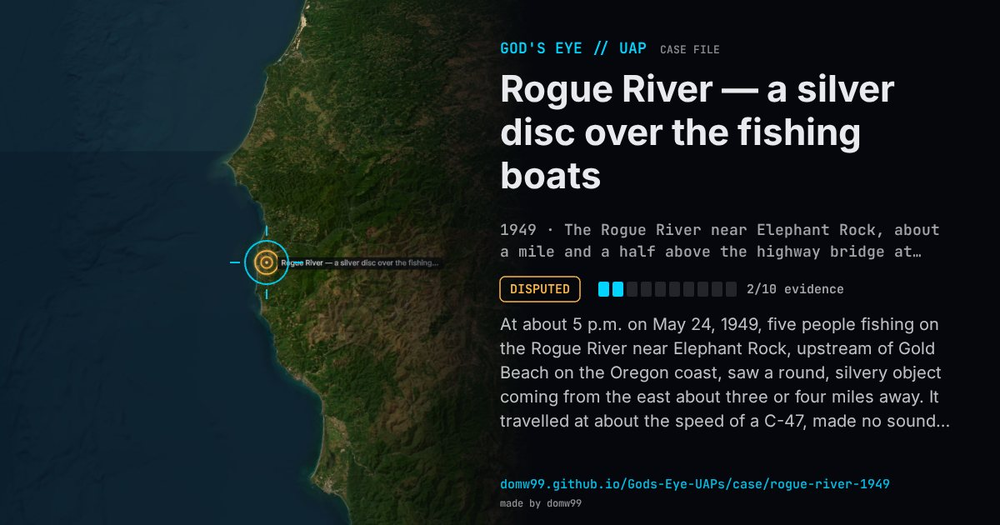

Rogue River — a silver disc over the fishing boats

At about 5 p.m. on May 24, 1949, five people fishing on the Rogue River near Elephant Rock, upstream of Gold Beach on the Oregon coast, saw a round, silvery object coming from the east about three or four miles away. It travelled at about the speed of a C-47, made no sound, left no exhaust trail and did not manoeuvre, then turned to the south-west and was gone. The Air Force’s Office of Special Investigations interviewed one of the party in August and checked the weather: the coast was open and clear that day. Later catalogues name the others as employees of the NACA Ames Aeronautical Laboratory and their families, and describe a flattened disc with a vertical fin; the Air Force file closes the case as an aircraft.
Explanation
The Air Force record card closes it as “aircraft”: “no data presented to indicate object could NOT have been an A/C”. The witness the Office of Special Investigations interviewed said it made no noise, left no exhaust trail and was about the size of a C-47; others in the party, by later accounts employees of the NACA Ames laboratory, described a flat disc with a vertical fin. UFO researchers, Bruce Maccabee among them, have argued that no aircraft or blimp fits, and the case is counted among the Blue Book unknowns by those catalogues.
What was seen
Shape: A round, silver object the size of a C-47 transport; by other accounts a flattened disc with a fin
Witnesses: Five people fishing from a boat, one of them interviewed by the Air Force
Duration: Under three minutes, by later accounts
Sources
- Project Blue Book file — Rogue River, Oregon, 24 May 1949 (Internet Archive)
- UAP Discovery — May 24, 1949, the Rogue River incident (case notes and scans)
Browse
- United States
- 1940s
- Disputed
- Mass sightings
- Official government documents
- Many independent witnesses
- Spheres and orbs
- Discs and saucers